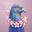
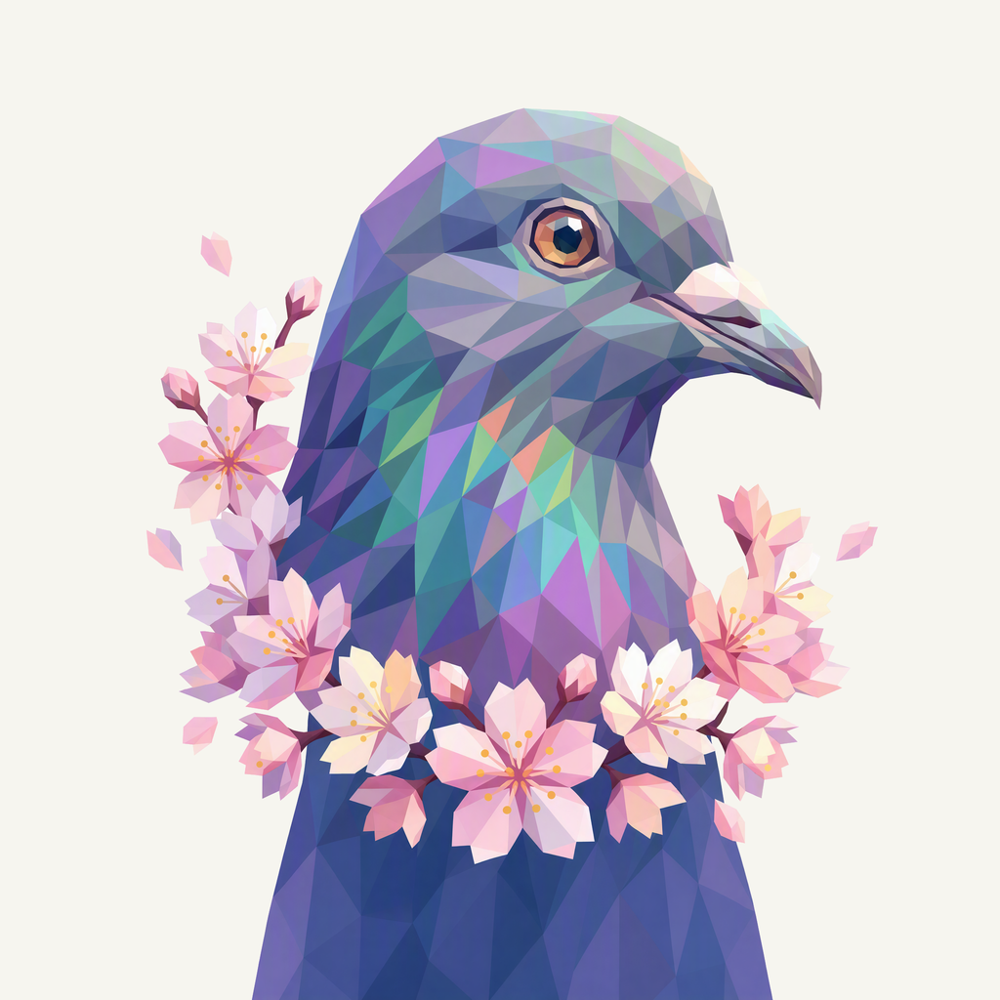
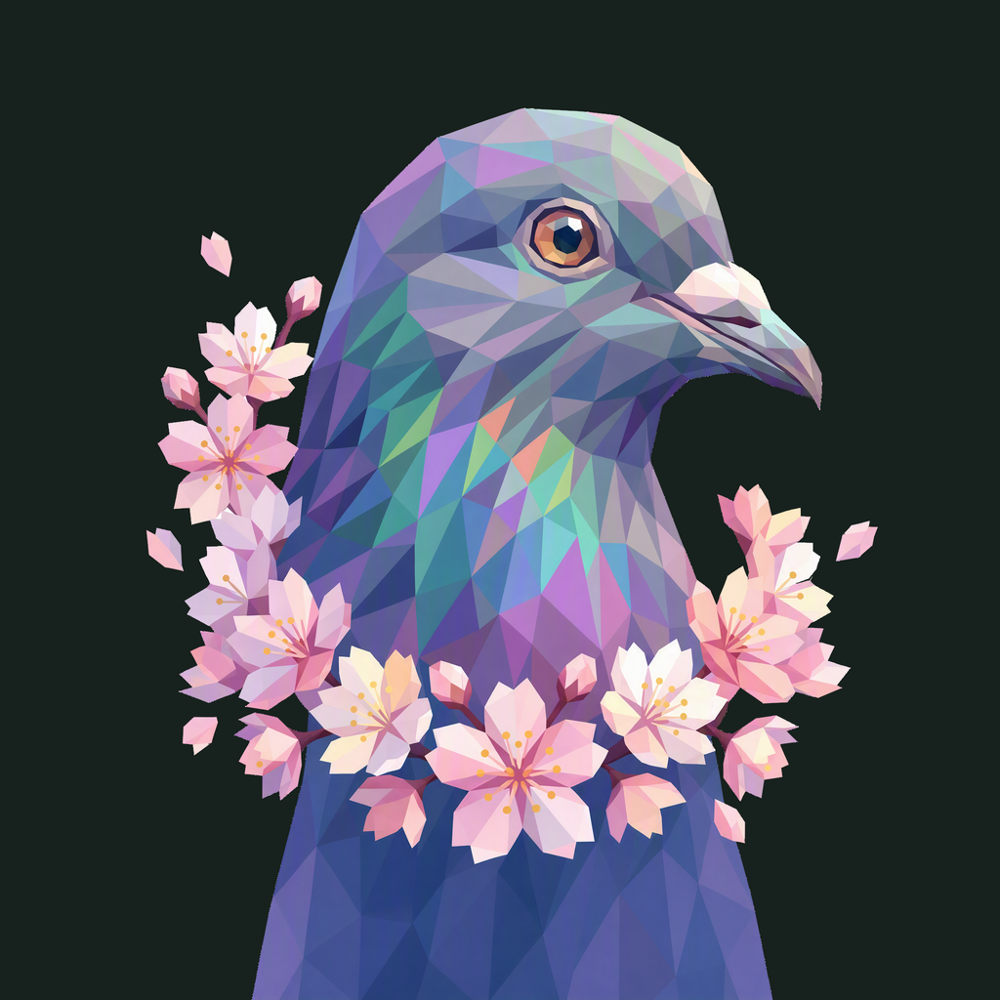

01 / Composition
Blossoms beside the gaze
The amber eye and right-facing profile retain their direction. Blossoms frame the lower portrait loosely, while the neck continues past the bottom instead of ending in a round medallion.
Animal family · Selected Dove study
A calm sideward gaze, cool plumage, and blossoms with space to breathe.
Withdrawn before publication · finishing 02
Native 2048 × 2048
01 / Composition
The amber eye and right-facing profile retain their direction. Blossoms frame the lower portrait loosely, while the neck continues past the bottom instead of ending in a round medallion.
02 / Drawing
Slate, teal, and violet facets carry the iridescent plumage. Pink and ivory blossoms form the secondary focal point; pale petals and the light beak stay opaque and clean.
03 / Presentation
An open petal-and-branch relief sits on a muted rose field. The motif follows the empty left side, leaving the bird and flowers clearly separated from the matte background.
The same artwork at actual display sizes.

At 32 px, the side profile, amber eye, and pink blossom collar carry the mark. At 16 px, stamens and individual petals merge into a soft pink accent around the blue silhouette.
A distinct presentation field, with colors sampled from the native dove artwork.
Select a swatch to copy its hex value. Dove’s existing site primary, #C65379, remains a separate UI color.
One foreground, checked on two contrasting backgrounds.


Azure Foundry · gpt-image-2 · native 2048 × 2048
Loading prompt…


{kind=link}
{kind=link}
{kind=link}
{kind=link}
{kind=link}